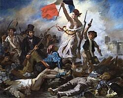

O que é Arte?
A arte é uma forma de expressão humana que engloba diversas atividades criativas, como pintura, escultura, música, dança, literatura, teatro, entre outras. Ela envolve a manifestação de ideias, emoções e percepções através de formas e símbolos, buscando um ideal de beleza, harmonia ou expressando a subjetividade humana. A arte pode ter funções estéticas, comunicativas, sociais e culturais, e sua interpretação varia de acordo com o contexto histórico e cultural.
Arte Pré-Histórica
A arte pré-histórica refere-se às manifestações artísticas produzidas antes do desenvolvimento da escrita, abrangendo períodos como o Paleolítico e o Neolítico. Caracteriza-se principalmente por pinturas rupestres em cavernas, esculturas e objetos utilitários decorados, revelando a forma como os humanos pré-históricos interagiam com seu ambiente, suas crenças e suas experiências cotidianas.
a arte pré-histórica pode ser dividida em duas partes: o paleolítico e o Neoclassicismo.
Paleolítico
O Paleolítico é a primeira fase periódica da história, com início há cerca de 2,5 milhões de anos e término em 10.000 a.C. Ornamentos ancestrais encontrados por pesquisadores datam desta época. O exemplo mais antigo vem do Marrocos e se trata de uma coleção de conchas perfuradas e tingidas de Caracol Nassarius. Os padrões de desgaste sugerem que elas possam ter formado um colar há 82 mil anos.
neolítico
O início do Neolítico é marcado pelo início da agricultura, realizada ainda por sociedades nômades de caçadores coletores. Isso ocorreu em diferentes momentos em diferentes partes do mundo, e também se estendeu por tempos diferentes, a depender da região, e por isso diferentes sociedades vivenciaram o neolítico em momentos diferentes. Na Ásia, por exemplo, o início do Neolítico ocorreu cerca de 10 mil anos atrás, e na Europa, há 6 ou 7 mil anos.
Arte antiga
A arte antiga refere-se à arte desenvolvida pelas civilizações antigas após a criação da escrita e que se estende até o paleocristão. (primeiras expressões artísticas do cristianismo, produzidas para os cristãos ou por eles.)
Arte Medieval
A Arte Medieval do mundo ocidental cobre um vasto período de tempo e lugar, com mais de 1000 anos na Europa, e em certos períodos na Ásia Ocidental e no Norte da África. Inclui grandes movimentos e períodos artísticos, arte nacional e regional, gêneros, reavivamentos, artesanato dos artistas e os próprios artistas. A arte medieval foi produzida em muitos meios, e as obras sobrevivem em grande número em esculturas, manuscritos iluminados, vitrais, trabalhos em metal e mosaicos, todos os quais tiveram uma taxa de sobrevivência mais alta do que outros meios, como pinturas de parede a afrescos, trabalhos em metais preciosos ou têxteis, incluindo tapeçaria. Especialmente no início do período, obras nas chamadas "artes menores" ou artes decorativas, como trabalhos em metal, escultura em marfim, esmalte vítreo e bordados usando metais preciosos, eram provavelmente mais valorizadas do que pinturas ou esculturas monumentais.
Compreendida como período histórico da História da Europa entre os séculos V e XV. Inicia-se com a Queda do Império Romano do Ocidente e termina durante a transição para a Idade Moderna. A Idade Média é o período intermédio da divisão clássica da História Ocidental, a saber: a Antiguidade, Idade Média, Idad Moderna e Idade Contemporânea, sendo frequentemente dividido em Alta Idade Média e Baixa Idade Média.
Foi um período onde a Igreja Católica teve uma grande influência em todos os aspectos da vida social, inclusive no campo artístico.
Arte Renascentista
A arte renascentista foi um dos movimentos mais impactantes da história da humanidade. Surgido na Europa entre os séculos XIV e XVI, o Renascimento trouxe uma nova forma de pensar e expressar a arte, rompendo com os padrões medievais e resgatando os valores clássicos da Antiguidade.
Arte barroco
O barroco foi um estilo artístico que floresceu entre o final do século XVI e meados do século XVIII, originando-se na Itália e se espalhando por diversos países da Europa e da América. Caracterizado pela grandiosidade, exuberância e contraste, o barroco buscou expressar a tensão entre o divino e o humano, o sagrado e o profano, a razão e a emoção.
Arte Neoclássica
O Neoclassicismo foi um movimento artístico e cultural que surgiu no final do século XVIII e início do XIX, em resposta ao Barroco e Rococó, buscando inspiração na arte da Antiguidade Clássica (Grécia e Roma). Valorizava a simplicidade, a ordem, a harmonia, a razão e a busca pela beleza ideal.
Arte romantismo
O romantismo é um movimento artístico e cultural caracterizado pelo sentimentalismo, subjetivismo e fuga da realidade. Esse movimento surgiu no século XVIII na Europa, durante a revolução industrial, e logo se espalhou por diversos países como: França, Alemanha, Inglaterra, Brasil e Portugal.
Realismo
O realismo na arte é um movimento que busca representar a realidade de forma objetiva e precisa, sem idealizações ou subjetividades, como uma forma de oposição ao romantismo. Artistas realistas procuram retratar o cotidiano, as pessoas e os problemas sociais de maneira fiel, buscando uma representação verossímil do mundo.

Impressionismo
O impressionismo foi um movimento artístico que surgiu na França no século XIX, por volta de 1860, e se caracterizou pela representação da realidade através da luz e da cor, com pinceladas soltas e visíveis, buscando capturar a impressão visual imediata. O movimento rompeu com a tradição acadêmica, valorizando a pintura ao ar livre e a representação de cenas cotidianas.
Pós-Impressionismo
O Pós-Impressionismo foi um movimento artístico que surgiu na França no final do século XIX, sucedendo o Impressionismo e abrindo caminho para as vanguardas do século XX. Artistas como Van Gogh, Gauguin, Cézanne e Toulouse-Lautrec são seus principais representantes, cada um com um estilo único, mas todos compartilhando uma busca por expressividade e emoção além da mera representação visual.
Arte moderna
Arte moderna refere-se a um conjunto de expressões artísticas que surgiram na Europa e América no final do século XIX e início do século XX, caracterizadas pela ruptura com as tradições e a busca por novas formas de expressão. No Brasil, a Semana de Arte Moderna de 1922 é considerada um marco importante para a consolidação do movimento modernista.
Arte Contemporânea
A arte contemporânea é um movimento artístico que surgiu após a Segunda Guerra Mundial, caracterizado pela diversidade de estilos, técnicas e conceitos, muitas vezes desafiando as noções tradicionais de "arte" e "beleza". Ela engloba uma ampla gama de expressões, incluindo pintura, escultura, instalação, performance, vídeo e arte digital, e reflete as complexidades e mudanças da sociedade contemporânea.

"arte" por IA (inteligencia artificial)
A "arte" de inteligência artificial é qualquer obra, especialmente imagens e composições musicais, criada com o uso de programas de inteligência artificial (IA), como modelos de texto para imagem e geradores musicais. Às vezes, ela é confundida com arte digital. Embora tanto imagens de IA quanto a arte digital envolvam o uso de tecnologia, a IA é caracterizada pelo uso de algoritmos generativos e técnicas de Aprendizado de máquina que podem produzir de forma autônoma, utilizando diretamente de imagens feitas por artistas humanos, muitas vezes sem possuir as devidas permissões de direitos autorais dos próprios.

A arte por IA é muito controversa,pois muitos artistas não a consideram como arte,pois qualquer 1 com acesso a internet consegue fazer uma arte usando IA e tambem que a arte por ia não expressa nada, nem os sentimentos nem os sonhos do artistas, resumindo uma arte sem valor nenhum
Artista preguiçoso
Muitas vezes um artista demora meses e mais meses para fazer 1 unica obra, isso acontece por varios motivos, bloqueio criativo, o instrumento que ele usava para desenhar quebrou,etc. Mas varios artistas so enrolam para fazer um unico desenho por simplesmente preguiça, não se sabe se é desanimo, se a vida deles é muito cheia, ou qualquer outro motivo.
Um exemplo de artista preguiçoso são esses dois, pepe e starboy.Esses dois artistas demoraram varios meses para entregar 1 unica obra de arte.
starboy: ele desenha bem porem ele não tenta melhorar anatomia e demora um tempo consideravel para entregar 1 unico desenho. pepe: Essa pessoa, desenha bem, tem tempo, não tem tantos probelmas com seus materiais de desenho, mas pela MAIS PURA PREGUIÇA demora mais de 9 meses pra entregar 1 unico desenho.